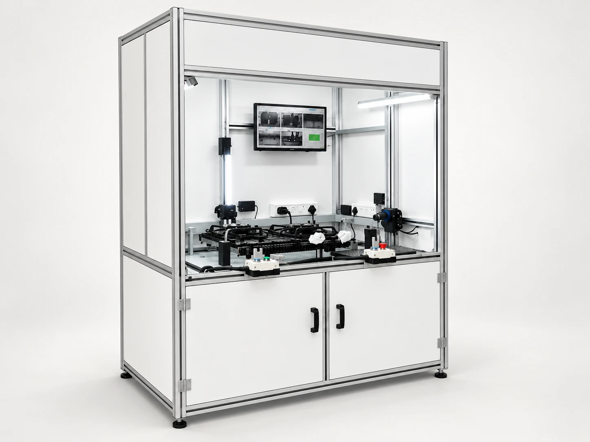

Your process
What operation must the machine perform?
Machines & production lines
Custom machine design, building and assembly for unique production needs.
Discuss your requirementDefine the scope
What operation must the machine perform?
Which part drawings, samples and tolerances are available?
How will the completed operation be checked?
From requirement to handover
We start with your process, your constraints and the people who use it.
We turn the requirement into a practical design, with the details agreed.
Fabrication, controls and installation come together around your line.
Commissioning and maintenance support the equipment beyond handover.
Related equipment
Inspection cells and test benches designed around your component and quality checks.
Explore this product family
Connected capabilities
Let’s make it work